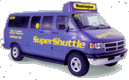

|
|
Ground Transportation |
| Washington Dulles International Airport is convenient to the entire Metropolitan Washington Region. For more information about getting to and from Dulles, including Parking information, please refer to these resources... |
Driving:Directions to Washington Dulles International Airport are available. For exact door-to-door directions, go to www.mapquest.com and click on Driving Directions. Under Advanced Options be sure to select Airports and enter "Washington DC" in either the Destination or Starting Location boxes. Parking:For information about parking at Dulles, contact Aerolink Parking at 703-572-4500 or 703-572-4580. You may also view a complete listing of parking lot facilities, costs, and maps available at Dulles International Airport. Washington Flyer Express Bus:
Purchase tickets at Washington Flyer service desks located at the East and West ends, on the lower level of the Main Terminal in the Ground Transportation Centers, or at the ticket booth located at curbside location 2D at the lower-level roadway. When departing from the West Falls Church Metro Station, you may purchase tickets on arrival at the airport. For additional information, call toll-free (888)-WASHFLY or visit their Web site at www.washfly.com. A comprehensive chart of Washington Flyer rates, locations, and schedules is also available. Washington Flyer Taxi:Washington Flyer Taxicabs serve Dulles International Airport exclusively with 24-hour service to and from the airport. Taxicab Dispatchers are on duty 24 hours a day at the East and West ramps on the lower level of the Main Terminal. Wheelchair-accessible minibuses that accommodate nine to 12 passengers are also available for use to and from Washington Dulles International Airport (advance reservations are required). Smoking and non-smoking vehicles are available by request. For information or to arrange transportation for your return trip, call 703-661-6655. Taxicabs accept American Express, Diners Club, MasterCard and Visa, and provide transportation at metered rates to any destination in metropolitan Washington. Approximate one way fares to Washington, DC, range from $35 to $47. A chart listing approximate taxi rates from Dulles International Airport can also be viewed. SuperShuttle:SuperShuttle provides Door-to-Door Shared-Ride Service. SuperShuttle will pick you up or take you to your own home, business, or hotel anywhere within the Washington Metropolitan area. A fleet of 117 vans, which hold up to seven passengers, provides service from 5:30 a.m. to 12:30 a.m. daily. Approximate one way fares to Washington, DC, range from $20 to $24. Twenty-four hour advance reservations are recommended; call SuperShuttle at 800-BLUEVAN (1-800-258-3826), or make reservations on line. Disabled-accessible vehicles are available on request. Metrorail:
Rental Cars:Information screens and courtesy telephones are located on the Lower Level of the Main Terminal in the Ground Transportation Centers. Rental car check-in facilities are open 24 hours a day; you may also view a list of car rental companies available at the airport. Rental car patrons are transported to the rental car agencies via shuttle buses. From Baggage Claim (lower) Level, go down any ramp, and proceed out the building to the second curbside. Disabled-Accessible Courtesy Service:Courtesy service is available 24 hours a day, 7 days a week, between parking lots and the Main Terminal. Service may be requested by using Customer Assistance Call Boxes near selected shuttle bus stops in Economy and Daily 2 parking lots. Metrobus:Public bus service is available at the West Falls Church Metrorail Station to areas not served by Metrorail. Washington Flyer Express Bus service is available every 30 minutes, linking the West Falls Church (VA) Metrorail station and the Airport. For Metrobus information, call (202) 638-3780; TDD (202) 638-3780. Limousine Service:Stretch limousine and executive-class sedans are available with advance reservations through private vendors. Prices start at approximately $42 for downtown Washington and suburban Maryland destinations. Consult the Yellow Pages for listings. Greyhound Airport Service:
Going to Baltimore?If you're going to Baltimore from IAD, you have several options.
The most common way is to go first to Union Station in downtown Washington DC, and then take the train (Amtrak) to Baltimore. To get to Union Station, you can take either the Washington Flyer Express Bus (Sun.- Fri, $16/$26 round trip) or a Washington Flyer Taxi (about $45). From Union Station, trains leave for Baltimore very frequently; check Amtrak's website for more details on times and fares. Washington Flyer Taxi service can take you directly to downtown Baltimore (the fair is approximately $110); you can also rent a car (see above). Currently neither SuperShuttle nor the Washington Flyer Express Bus go to Baltimore. Going to Baltimore/Washington International Airport (BWI)?If you're traveling from Washington Dulles International Airport to BWI, you can:
|

 Operated by the Metropolitan Washington Airports Authority, the
Washington Flyer Express Bus provides
Operated by the Metropolitan Washington Airports Authority, the
Washington Flyer Express Bus provides